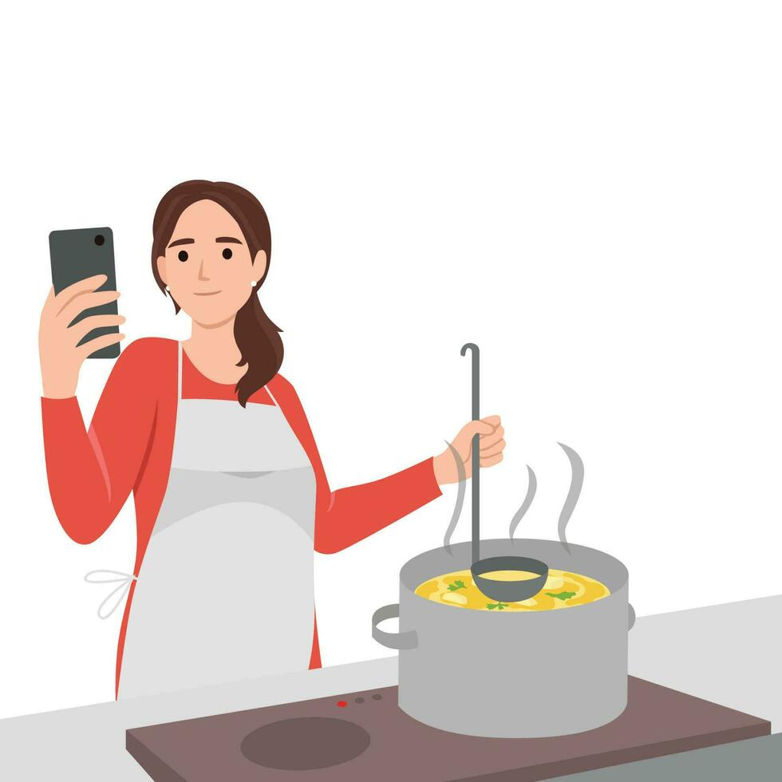

Transformez les aliments oubliés de votre frigo en délicieux repas. Économisez de l'argent tout en sauvant la planète.

Une histoire qui se répète chez des millions de personnes chaque jour
Vous ouvrez le frigo après une longue journée. Vous ne savez pas quoi préparer et n'avez pas vraiment envie de cuisiner...
Fatigué ou stressé, il est plus facile de commander à manger. 15-20 CHF dépensés sans réfléchir.
Pendant ce temps, les aliments achetés restent oubliés au fond du frigo. Légumes, viande périmée, produits laitiers expirés...
Impossible à manger. Vous les jetez à la poubelle. 30-50 CHF de nourriture gaspillée chaque semaine, sans compter l'impact environnemental.
Aussi simple que : Une app • Une photo • Des recettes géniales
Prenez une photo des aliments dans votre frigo
Notre IA reconnaît les aliments instantanément
Recevez 5+ recettes adaptées et faciles
🎯 La différence : Au lieu de jeter des aliments et commander à manger, vous prenez une photo, trouvez 5 recettes délicieuses en 30 secondes et économisez votre argent. Simple, rapide, efficace.
Sauvez 40-120 CHF par mois en réduisant le gaspillage et les commandes de livraison.
Une photo = recettes en 30 secondes. Pas de saisie manuelle, pas de complications.
Réduisez le gaspillage alimentaire et votre empreinte carbone.
Parfait pour les étudiants, les jeunes actifs et les familles occupées.
Des recettes faciles à préparer, même si vous manquez d'expérience culinaire.
Libérez votre charge mentale. Plus besoin de vous demander "Qu'est-ce que je vais manger ?"
| Caractéristique | SnapEats | Frigo Magic | Cookpad |
|---|---|---|---|
| Saisie photos automatique | ✅ | ❌ | ❌ |
| Génération de recettes | ✅ | ✅ | ✅ |
| Lutte contre gaspillage | ✅ | ✅ | ❌ |
| Saisie manuelle requise | ❌ | ✅ | ✅ |
| Ultra simple d'utilisation | ✅ | ❌ | ❌ |
Âge : 18-25 ans
Besoin : Économiser de l'argent, manger rapidement
Âge : 26-50 ans
Besoin : Organiser, économiser, réduire le stress
Rejoignez les premiers utilisateurs de SnapEats et transformez votre façon de cuisiner.
📱 Disponible prochainement sur iOS et Android